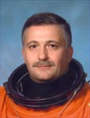

Lyndon B. Johnson Space Center
Houston, Texas 77058
|
National Aeronautics and Space Administration Lyndon B. Johnson Space Center Houston, Texas 77058 |
 |
Biographical Data |
||
YURCHIKHIN FYODOR NIKOLAYEVICH
PERSONAL DATA: Born January 3, 1959, in Batumi, Georgia. Married to Larisa Anatolievna Yurchikhina. They have two children.
EDUCATION: After graduation from high school in Batumi in 1976, entered the Moscow Aviation Institute named after Sergey Ordzhonikidze. Graduated in 1983 with a bachelor degree in mechanical engineering, specializing in airspace vehicles. In 2001 received a masters degree and defended theses at the Moscow State University of service.
EXPERIENCE: After graduating from the S. Ordzhonikidze Moscow Aviation Institute he worked at the Russian Space Corporation Energia from September, 1983, until August, 1997. He held the following positions: engineer, senior engineer, lead engineer, instructor-test-cosmonaut. Supported the Shuttle-Mir and NASA-Mir programs. Started working for the Gagarin Cosmonaut Training Center in February, 2012.
SPACEFLIGHT TRAINING:
SPACEFLIGHT EXPERIENCE: Yurchikhin performed his first spaceflight on the shuttle STS-112 in October 7 – 18, 2002 as mission specialist. He completed his 2nd spaceflight from April to October 2007 (196 days) as ISS-15 commander and Soyuz TMA flight engineer. He performed three EVAs that lasted 18 hours 44 minutes total. Completed his 3rd spaceflight from June 16 – November 26, 2010 as Soyuz TMA-19 commander and ISS-24/25 flight engineer. Performed 2 EVAs that lasted 13 hours and 10 minutes. A veteran of 3 spaceflight, Yurchikhin has logged 371 days in space with 5 EVAs that lasted 32 hours.
AWARDS: Hero of the Russian Federation (2008), Order of Friendship, NASA medals, Order of Merit for the Motherland of the 3rd degree, medals of the Russian Cosmonautics Federation; Order of the Phoenix (Greece).
HOBBIES: His hobbies include collecting stamps and space logos, sports, history of cosmonautics, reading (history, science fiction and the classics).
NOVEMBER 2012